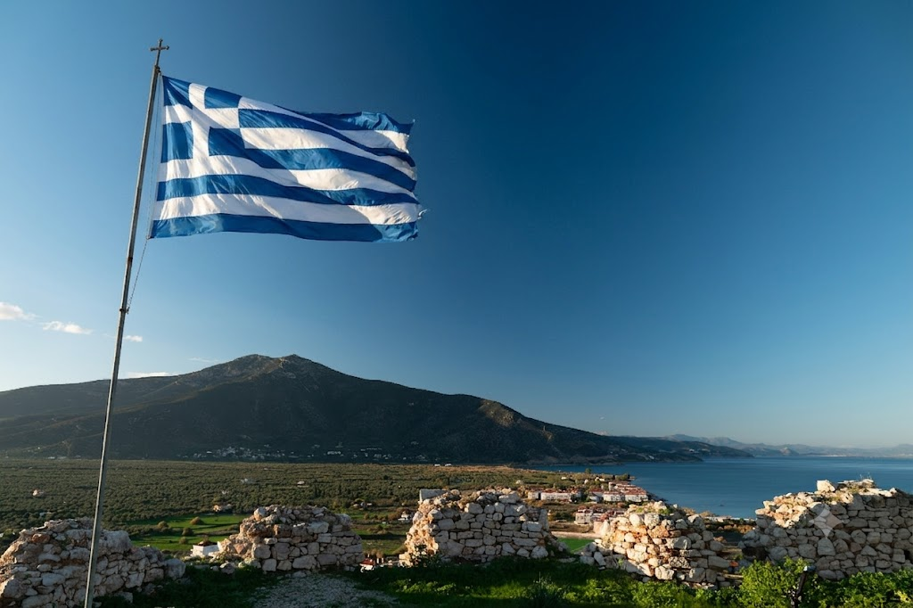

-
Το νερό. Ο Ζαβίτσας είναι καρστικός ασβεστόλιθος. Η βροχή εξαφανίζεται μέσα του, ταξιδεύει 190 ώρες υπόγεια και αναδύεται στις πηγές Αναβάλου που αρδεύουν 200.000 στρέμματα εσπεριδοειδών και ελαιώνων. Η ανατίναξη της κορυφογραμμής για θεμέλια ανεμογεννητριών συντρίβει αυτό το δίκτυο. Όταν πέσει η πίεση του γλυκού νερού σε παράκτιο καρστικό υδροφόρο, η θάλασσα καταλαμβάνει το κενό. Τα πηγάδια γίνονται αλμυρά. Η πεδιάδα σταματά να παράγει.The water. Mount Zavitsa is karst limestone. Rain disappears into it, travels 190 hours underground through fractures and sinkholes, and surfaces as the Anavalos springs that irrigate 50,000 acres of citrus and olive groves. Blasting the ridge for turbine foundations shatters that underground network. When freshwater pressure drops in a coastal karst aquifer, seawater fills the void. The wells go saline.
-
Το τέχνασμα. Ένα έργο χωρίστηκε σε δύο δήμους για να αποφευχθεί ενιαία περιβαλλοντική αξιολόγηση. Έρευνα Πανεπιστημίου Ιωαννίνων έδειξε ότι σε χαμηλότερο έδαφος η αποδοτικότητα μειώνεται μόνο 4%. Οι κατασκευαστές επέλεξαν τις παρθένες κορυφές. Η δημόσια γη σε ζώνες Natura 2000 είναι φθηνότερη. Στις 25 Μαΐου, δώδεκα κοινότητες ψήφισαν κατά.The permit trick. One project split across two municipalities to prevent a unified environmental review. A University of Ioannina study showed turbines could achieve 96% efficiency on lower terrain. Developers chose the pristine peaks anyway. Public land in Natura 2000 zones is cheaper. On May 25, twelve communities voted against.
-
Δύο προθεσμίες, τώρα. Η δημόσια διαβούλευση για νέο χωροταξικό πλαίσιο ΑΠΕ κλείνει 24 Ιουνίου. Τα αδειοδοτημένα έργα εξαιρούνται, αλλά η υποβολή σας γίνεται μόνιμο νομικό αρχείο στις Βρυξέλλες. Επίσης, η Ελλάδα πρέπει να υποβάλει πλήρες Σχέδιο Διαχείρισης UNESCO για τον Πάρνωνα έως 30 Σεπτεμβρίου 2027. Οι κατασκευαστές τρέχουν να προλάβουν και τις δύο.Two deadlines, right now. Greece's public consultation on new renewable energy planning closes June 24. Licensed projects are exempt from the new 1,200m prohibition, but your submission becomes a permanent legal record in Brussels. Greece must also file a full UNESCO Management Plan for the 516,412-hectare Parnon Biosphere Reserve by September 30, 2027. Developers are racing to beat both.
-
Το 1.200μ. δεν αρκεί. Ο οικολόγος Στέφανος Σταμέλλος (e-ecology.gr) κατέθεσε παρέμβαση στη διαβούλευση που τεκμηριώνει αυτό που πολλοί υποψιαζόμαστε: το ισχύον Χωροταξικό Πλαίσιο ΑΠΕ έπρεπε νομικά να αναθεωρείται ανά πενταετία (Νόμος 4447/2016). Δεν αναθεωρήθηκε για 18 χρόνια. Το νέο πλαίσιο νομιμοποιεί αυτή την παράβαση αντί να τη διορθώσει. Ο Σταμέλλος ζητά το όριο να πέσει από 1.200 στα 800 μέτρα, γιατί εκεί αρχίζουν τα ευαίσθητα ορεινά οικοσυστήματα. Ο Ζαβίτσας βρίσκεται πάνω από τα 800 μέτρα.1,200m is not enough. Ecologist Stefanos Stamellos (e-ecology.gr) filed a submission documenting what many suspected: the current Spatial Planning Framework was legally required to be revised every five years under Law 4447/2016. It was not revised for 18 years. The new framework legitimizes that violation rather than correcting it. Stamellos calls for the prohibition threshold to drop from 1,200 metres to 800 metres, because that is where sensitive mountain ecosystems actually begin in Greece. Mount Zavitsa sits above 800 metres.
Ενέργεια 1: Στείλτε την Ένστασή σας στην ΕΕ Action 1: Send Your Objection to the EU
Προδιαμορφωμένη, νομικά τεκμηριωμένη ένσταση που επικαλείται την Οδηγία Πλαίσιο για τα Ύδατα και την Οδηγία Οικοτόπων. Αποστολή σε Ευρωπαϊκή Επιτροπή, Ευρωπαϊκό Κοινοβούλιο, Υπουργείο Περιβάλλοντος και τους δύο δήμους Κυνουρίας ταυτόχρονα. A pre-written, legally grounded objection citing the Water Framework Directive and Habitats Directive. Sends to the EU Commission, EU Parliament petitions committee, the Greek Ministry of Environment, and both Kynouria municipalities simultaneously.
✉️ ΣΤΕΙΛΤΕ ΤΗΝ ΕΝΣΤΑΣΗ ΣΑΣ ΤΩΡΑSEND YOUR OBJECTION NOWΕνέργεια 2: Δημόσια Διαβούλευση ⏰ Κλείνει 24 Ιουνίου Action 2: Public Consultation ⏰ Closes June 24
Το νέο χωροταξικό πλαίσιο ΑΠΕ της Ελλάδας απαγορεύει αιολικά πάνω από 1.200μ. και κατονομάζει τον Πάρνωνα ως προστατευόμενη περιοχή. Τα αδειοδοτημένα έργα εξαιρούνται. Η υποβολή σας είναι μόνιμο νομικό αρχείο που μπορεί να χρησιμοποιηθεί σε δικαστήριο και στις Βρυξέλλες. Κλείνει 24 Ιουνίου. Greece's new renewable energy spatial framework bans wind farms above 1,200m and names Parnon as a protected region. Licensed projects are exempt. Your submission is a permanent legal record that can be cited in court and in Brussels. Closes June 24.
✉️ ΥΠΟΒΟΛΗ ΣΧΟΛΙΩΝ ΔΙΑΒΟΥΛΕΥΣΗΣSUBMIT CONSULTATION COMMENTΤο σύστημα νερούThe water system
Ο καρστικός Πάρνωνας χρειάζεται 190 ώρες για να μεταφέρει νερό υπόγεια από ηπειρωτικές καταβόθρες στις πηγές Αναβάλου στο Κιβέρι. Ο Παυσανίας το κατέγραψε τον 2ο αιώνα μ.Χ. Η σύγχρονη ιχνηθέτηση επιβεβαίωσε τη διαδρομή 1.800 χρόνια αργότερα. The Parnon karst takes 190 hours to move water underground from inland sinkholes to the Anavalos springs at Kiveri. Pausanias documented it in the second century AD. Modern dye-tracing confirmed the route 1,800 years later.
Τι κινδυνεύειWhat's at risk
Πάνω από 200.000 στρέμματα εσπεριδοειδών και ελαιώνων στη Θυρεατική και Αργολική πεδιάδα εξαρτώνται από αυτόν τον υδροφόρο. Όταν η πίεση του γλυκού νερού πέσει σε παράκτιο καρστικό σύστημα, η θάλασσα μπαίνει. Τα πηγάδια γίνονται αλμυρά. Η πεδιάδα σταματά να παράγει. 50,000 acres of citrus and olive groves on the Thyrean and Argive plains depend on this karst aquifer. When freshwater pressure drops in a coastal karst system, seawater intrudes. The wells go saline. The plain stops producing.
Το τέχνασμαThe permit trick
Ένα έργο χωρίστηκε σε δύο δήμους για αποφυγή ενιαίας περιβαλλοντικής αξιολόγησης. Έρευνα Πανεπιστημίου Ιωαννίνων (Κ. Βασιλική Κάτη) έδειξε 96% αποδοτικότητα σε χαμηλότερο έδαφος. Οι κατασκευαστές επέλεξαν τις παρθένες κορυφές: η δημόσια γη σε ζώνες Natura 2000 είναι φθηνότερη και πιο εύκολα προσβάσιμη. One project split across two municipalities to avoid a unified environmental review. A University of Ioannina study (Prof. Vasiliki Kati) showed turbines could achieve 96% efficiency on lower terrain. The developers chose the pristine peaks anyway: public land in Natura 2000 zones is cheaper and easier than private land at lower elevations.
Ψήφος κοινότηταςCommunity vote
Δώδεκα κοινότητες στη συνεδρίαση Βόρειας Κυνουρίας της 25ης Μαΐου 2026 ψήφισαν κατά. Το συμβούλιο είχε ήδη προσλάβει δικηγόρο και καταθέσει προσφυγή κατά της πιστοποίησης παραγωγού στη ΡΑΑΕΥ. Η σημερινή άνοδος στον Ζαβίτσα είναι αυτή η ψήφος, δια ζώσης. Twelve communities at the May 25, 2026 North Kynouria council meeting voted against. The council previously hired a lawyer and filed against the producer certification at RAAEY. Today's march on Zavitsa is that vote made in person.
Προθεσμία: 24 Ιουνίου 2026Deadline: June 24, 2026
Η δημόσια διαβούλευση για το νέο χωροταξικό πλαίσιο ΑΠΕ κλείνει 24 Ιουνίου 2026. Η υποβολή σας είναι μόνιμο νομικό αρχείο στις Βρυξέλλες. Τα αδειοδοτημένα έργα εξαιρούνται από την απαγόρευση 1.200μ. Ακριβώς γι' αυτό έχει σημασία το αρχείο. Public consultation on Greece's new renewable energy spatial framework closes June 24, 2026. Your submission is a permanent legal record in Brussels. Licensed projects are exempt from the new 1,200m prohibition. That is exactly why the record matters.
Το πραγματικό όριοThe real threshold
Το νέο πλαίσιο απαγορεύει αιολικά πάνω από 1.200μ. Ο Στέφανος Σταμέλλος (e-ecology.gr) τεκμηριώνει ότι το επιστημονικά ορθό όριο είναι 800 μέτρα, εκεί που ξεκινούν τα ευαίσθητα ορεινά οικοσυστήματα στην Ελλάδα. Το ισχύον πλαίσιο ΑΠΕ χρονολογείται από το 2008 και έπρεπε νομικά να αναθεωρείται ανά πενταετία (Νόμος 4447/2016). Δεν αναθεωρήθηκε για 18 χρόνια. The new framework bans wind farms above 1,200m. Ecologist Stefanos Stamellos (e-ecology.gr) documents that the scientifically correct threshold is 800 metres, where sensitive mountain ecosystems actually begin in Greece. The existing framework dates from 2008 and was legally required to be revised every five years under Law 4447/2016. It was not revised for 18 years.
Προθεσμία: Σεπτέμβριος 2027Deadline: September 2027
Η Ελλάδα πρέπει να υποβάλει πλήρες Σχέδιο Διαχείρισης UNESCO για το Αποθεματικό Βιόσφαιρας Πάρνωνα-Ακρωτηρίου Μαλέα (516.412 εκτ.) έως 30 Σεπτεμβρίου 2027. Μόλις κωδικοποιηθεί, η βιομηχανική αδειοδότηση στο βουνό γίνεται πολύ δυσκολότερη. Οι κατασκευαστές τρέχουν να την προλάβουν. Greece must file a full UNESCO Management Plan for the 516,412-hectare Parnon Biosphere Reserve by September 30, 2027. Once codified, industrial permitting on the mountain becomes dramatically harder. Developers are racing to beat it.

Η Θυρεατική πεδιάδα από το κάστρο του Παραλίου Άστρους. Ο καρστικός υδροφόρος κάτω από τη Ζαβίτσα τροφοδοτεί ό,τι βλέπετε από εδώ. Φωτογραφία: Γιώργος Περδικάρης. The Thyreatis plain from the castle at Paralio Astros. The karst aquifer under Zavitsa feeds everything you see from here. Photo: George Perdicaris.
Η Πλήρης Ιστορία
Το βουνό είναι μηχανή
Ο Ζαβίτσας είναι καρστικός ασβεστόλιθος. Η βροχή εξαφανίζεται μέσα του αντί να απορρέει, φιλτράρεται μέσα από ρήγματα, καταβόθρες και υπόγειους αγωγούς προς την ακτή. Πειράματα ιχνηθέτησης ακολούθησαν το νερό από καταβόθρες στο Αρκαδικό οροπέδιο ως εκεί που αναδύεται ξανά: τις υποθαλάσσιες πηγές του Αναβάλου στον Αργολικό Κόλπο, ύστερα από 190 ώρες υπόγειας πορείας. Ο Παυσανίας έγραψε για εκείνες τις πηγές τον 2ο αιώνα μ.Χ. Τις αποκαλούσε Δίνη. Η σύγχρονη υδρογεωλογία χρειάστηκε άλλα 1.800 χρόνια για να επιβεβαιώσει τη διαδρομή που εκείνος περιέγραψε.
Αυτές οι πηγές τροφοδοτούν γεωτρήσεις αγροτικής χρήσης σε πάνω από 200.000 στρέμματα εσπεριδοειδών και ελαιώνων στη Θυρεατική και Αργολική πεδιάδα. Η εγκατάσταση ανεμογεννητριών σε καρστικό έδαφος σημαίνει 13 χιλιόμετρα νέου δρόμου πρόσβασης, διάτρηση και ανατίναξη βράχου, εκατοντάδες τόνοι σκυροδέματος ανά θεμέλιο. Κάθε έκρηξη συντρίβει υπόγειους αγωγούς. Όταν πέσει η πίεση του γλυκού νερού σε έναν παράκτιο καρστικό υδροφόρο, η θάλασσα καταλαμβάνει το κενό. Το νερό γίνεται αλμυρό. Η πεδιάδα σταματά να παράγει.
Πώς πέρασαν οι άδειες
Ο Φορέας Διαχείρισης Πάρνωνα καταργήθηκε με υπουργική απόφαση στις 10 Μαρτίου 2022. Το τελευταίο του ενημερωτικό δελτίο έφερε το λογότυπο του Αποθεματικού Βιόσφαιρας της UNESCO που είχε αγωνιστεί χρόνια να εξασφαλίσει. Στις 10 Μαΐου 2021, δέκα μήνες πριν από εκείνο το διάταγμα, η Πρόεδρος της Δημοκρατίας Κατερίνα Σακελλαροπούλου επισκέφτηκε τον υγρότοπο του Μουστού. Ο Δημήτριος Μήλιος, πρόεδρος του Φορέα Διαχείρισης, την ενημέρωσε προσωπικά για την οικολογική αξία της περιοχής. Εννέα μήνες αργότερα, υπουργικό διάταγμα κατήργησε τον φορέα που διοικούσε. Μέσα σε δύο χρόνια, οι μπουλντόζες δούλευαν στον Κοσμά.
Η αδειοδότηση σχεδιάστηκε ώστε να αποτρέπει ενωμένη αντίσταση. Το έργο Ζαβίτσα υπάγεται στον Δήμο Βόρειας Κυνουρίας. Οι εγκαταστάσεις κοντά στον Κοσμά υπάγονται στον Δήμο Νότιας Κυνουρίας. Δύο δήμοι, δύο χωριστές διαδικασίες, καμία απαίτηση ενιαίας αξιολόγησης για ένα ενιαίο οικοσύστημα. Έρευνα της καθηγήτριας Βασιλικής Κάτη έδειξε ότι οι ανεμογεννήτριες θα μπορούσαν να τοποθετηθούν σε χαμηλότερο έδαφος με απώλεια μόλις 4%. Οι κατασκευαστές επέλεξαν τις παρθένες κορυφές. Σε έρευνα του Euronews ρωτήθηκαν ευθέως γιατί. Η απάντηση ήταν ωμή: η δημόσια γη σε ζώνες Natura 2000 είναι φθηνότερη. Δεν υπάρχουν ιδιοκτήτες να διαπραγματευτείς. Το επιχείρημα της αποδοτικότητας είναι πρόσχημα.
Το δηλωμένο έργο περιλαμβάνει υποσταθμό στο Κάτω Βέρβενο, συνδεδεμένο με τις ανεμογεννήτριες με 17 χιλιόμετρα υπόγειου καλωδίου. Αυτό που προβλημάτισε ήταν η γη που αγοράζει ο κατασκευαστής γύρω από τον υποσταθμό πέρα από τις ανάγκες του δηλωμένου έργου. Η υποψία είναι αποθήκευση ενέργειας σε μπαταρίες, κάτι που θα επέκτεινε σημαντικά το περιβαλλοντικό αποτύπωμα και θα απαιτούσε νέα ΜΠΕ. Ο κατασκευαστής παρακάμπτει αυτό δηλώνοντας κάθε αλλαγή ως μικρή τροποποίηση. Οι αγορές γης λένε άλλη ιστορία. Πυρκαγιές σε μπαταρίες λιθίου προκαλούν θερμική διαφυγή, αυτοτροφοδοτούμενη χημική αντίδραση που το νερό αδυνατεί να σβήσει, μόνο να ψύξει. Η φωτιά μπορεί να αναζωπυρωθεί ώρες αφότου φαίνεται να έχει σβήσει. Σε ένα κατάξερο ελληνικό βουνό τον Αύγουστο, μέσα σε δάση ελάτης και κέδρου, αυτό δεν είναι θεωρητικός κίνδυνος.
Το πραγματικό κίνητρο και τρεις προθεσμίες
Η Ελλάδα πρέπει να δαπανήσει 30,5 δισ. ευρώ από το Ταμείο Ανάκαμψης και Ανθεκτικότητας της ΕΕ πριν από την αυστηρή προθεσμία της 26ης Αυγούστου 2026. Τα έργα ΑΠΕ μετρούν για τους στόχους αυτούς. Το 2025, το ελληνικό δίκτυο περιόρισε το 6,6% όλης της ανανεώσιμης ενέργειας που παρήχθη. Το ποσοστό αναμένεται να πλησιάσει το 12% το 2026. Η χώρα δεν έχει πρόβλημα παραγωγής. Έχει προθεσμία επιδοτήσεων. Ένα νέο καλώδιο διασύνδεσης, το Green Aegean, σχεδιάζεται για να δρομολογεί πλεόνασμα ελληνικής ηλεκτρικής ενέργειας κατευθείαν στη Γερμανία.
Η προθεσμία της διαβούλευσης είναι η 24η Ιουνίου. Η προθεσμία UNESCO είναι η 30η Σεπτεμβρίου 2027. Οι κοινότητες του Πάρνωνα δεν όρισαν καμία από αυτές τις προθεσμίες. Τα δύο κουμπιά στην κορυφή αυτής της σελίδας βάζουν το όνομά σας στο νομικό αρχείο. Αυτό το αρχείο δεν λήγει.
Η Βόρεια Κυνουρία είχε 9.483 κατοίκους στην απογραφή του 2021 σε 577 τ.χλμ. Το χωριό Δολιανά είχε 1.682 κατοίκους το 1879. Το 2021 έφτανε τους 723. Οι κατασκευαστές αιολικών πηγαίνουν εκεί όπου το πολιτικό βάρος είναι ελαφρύ, όπου οι κοινότητες είναι ήδη ερημωμένες. Αυτές οι κοινότητες δεν πολεμούν από θέση ισχύος. Αυτός ακριβώς είναι ο λόγος που επιλέχθηκαν.
The Full Story
The mountain is a machine
Mount Zavitsa is karst limestone. Rain disappears into it rather than running off, filtering down through fractures and sinkholes and underground conduits toward the coast. Dye-tracing experiments have followed water from sinkholes on the Arcadian plateau through that underground network to where it resurfaces: the Anavalos submarine springs on the Argolic Gulf, a journey of 190 hours underground. Pausanias wrote about those springs in the second century AD. He called them the Dini. It took modern hydrogeology another 1,800 years to confirm the route he described.
Those springs feed agricultural wells across the Thyreatis and Argive plains, more than 50,000 acres of citrus and olive cultivation. Wind turbine installation in karst terrain means 13 kilometres of new access road, drilling and blasting into bedrock, and hundreds of tonnes of concrete poured per foundation. Each detonation shatters underground conduits. When freshwater pressure drops in a coastal karst aquifer, seawater moves in to fill the void. The wells go saline. The plain stops producing.
How the permits got through
The Parnon Management Body was dissolved by ministerial decision on March 10, 2022. Its last newsletter had featured the logo of the UNESCO Biosphere Reserve it had spent years helping to secure. On May 10, 2021, ten months before that decree, President Katerina Sakellaropoulou visited the Moustos wetland at the foot of Parnon. Dimitrios Milios, president of the Management Body, briefed her personally on the ecological value of the protected area. The visit was photographed. It was published. It is on the public record. Nine months later, a ministerial decree abolished the body he led. Within two years of its dissolution, bulldozers were working in Kosmas.
The permit structure was built to prevent unified opposition. The Zavitsa project falls under North Kynouria municipality. The installations near Kosmas fall under South Kynouria. Two municipalities, two separate approval processes, no requirement for a unified environmental review of a single shared ecosystem. University of Ioannina professor Vasiliki Kati showed the turbines could be placed on lower, less pristine terrain with a loss of only 4% in efficiency. The developers chose the pristine peaks anyway. Asked directly in a Euronews investigation why, the answer was blunt: public land in Natura 2000 areas is cheaper and easier to access. No landowners to negotiate with. The efficiency argument is a pretext.
The declared project includes an electrical substation at Kato Vervena, connected to the turbines by 17 kilometres of underground cable. What drew concern at the May 25 council meeting was land purchases around that substation far exceeding the declared footprint. The suspicion is battery storage, which would substantially expand the project's environmental footprint and require a new impact assessment. The developer is sidestepping this by filing each change as a minor amendment. Lithium battery fires involve thermal runaway, a self-sustaining chemical reaction that water cannot extinguish, only cool. The fire can reignite hours after appearing to go out. On a bone-dry Greek mountain in August, in fir and cedar forest, that is not a theoretical concern. It is a documented hazard category.
The real motive and three deadlines
Greece has to spend 30.5 billion euros in EU Recovery and Resilience Facility grants and loans before a hard deadline of August 26, 2026. Renewable energy projects count toward the milestones. In 2025 the Greek grid curtailed 6.6% of all renewable energy produced, nearly 1,900 gigawatt-hours discarded for lack of transmission capacity. That figure is projected to approach 12% in 2026. The country does not have a generation shortage. It has a subsidy deadline. A new interconnector called the Green Aegean is being designed to route surplus Greek-generated electricity directly to Germany.
The consultation deadline is June 24. The UNESCO Management Plan deadline is September 30, 2027. The communities of Parnon did not set any of these deadlines. The two action buttons at the top of this page put your name on the legal record in Brussels. That record does not expire.
North Kynouria had 9,483 residents at the 2021 census across 577 square kilometres. The village of Doliana had 1,682 residents in 1879. By 2021 it had 723. Wind developers go where political weight is low, where communities are already hollowed out and isolated. These communities are not fighting from strength. That is precisely why they were chosen.